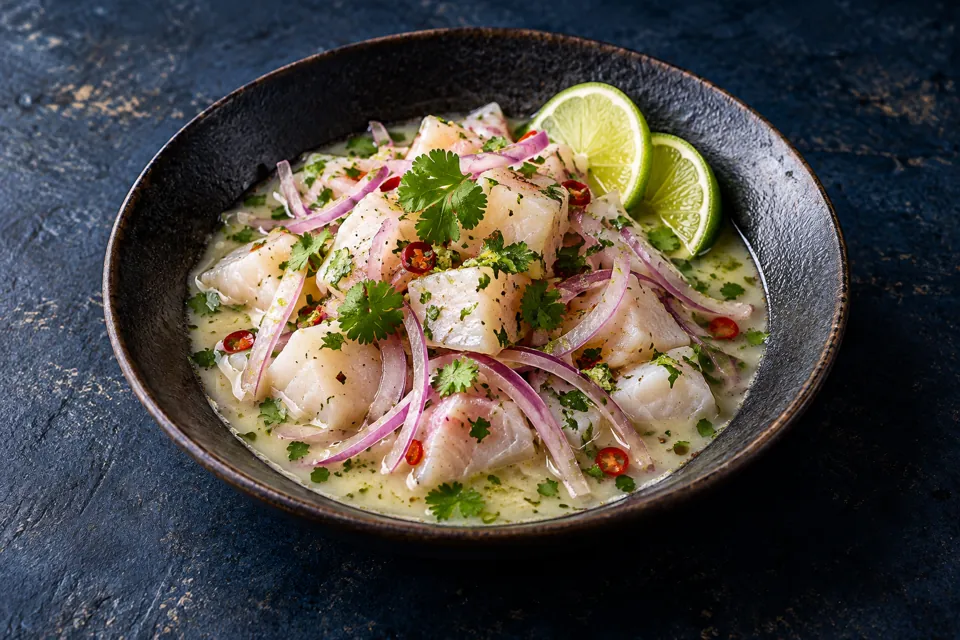

Costa chilena / Una mesa abiertaQuédate
Quédate
un poco más.
Algo fresco para empezar. Algo al centro para compartir. El resto puede esperar.
Explorar la cartaProductos de costaPara compartirUna sobremesa larga

EL MAR EN TU MESA MAREA / 02
FRESCO ✳ DE TEMPORADA ✳ PARA COMPARTIR ✳ A TU RITMO ✳
Del primer bocado
a la última conversación.
Elige tus platos, ajusta cantidades, divide el total y descarga una comanda de demostración. La selección queda guardada en este navegador.